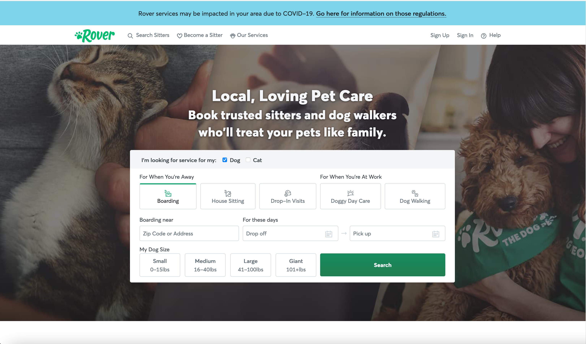

SENG 3230 Assignment 1: Project Proposal
Mission: Provide Bill Hudson and LeAnn Simonson with a useful portal to accomplish various school of
engineering functions.
Goals of the site:
- Allow LeAnn to generate a report of classes that need to be offered in a given semester to fulfill
student requirements.
- Give Bill a view of how lab equipment is being used to fulfill competency requirements.
- Provide a page for students to view and customize their custom academic plans.
I like the site rover.com as an example of layout. I like how they have a centered thing with important
functions. I can see this view being used to allow users to easily navigate to the main functions of the
site.
I also like how they have a nav bar at the top of the site. This could have functions like login/out, etc.

Content areas
- Login/home page. Simple login page where the user can enter their Dunwoody email and
password. That will
redirect to a home page for the user. Depending on the type of user, they will see different options on
their homepage. Kind of envisioning
a dashboard type of layout for that.
- Advising view: view reports. This is an important function for the advisor. There might
be many different reports to look at,
so we want a nice dashboard that lays everything out in an easy to view manner.
- Advising view: edit. The advisor will also have to edit things: add students to a
class, add a class, etc. Envisioning another dashboard here that
takes you to various forms.
- Student view. Student will initially land on a dashboard, but then would be able to
navigate
to a screen where they can interact with their custom academic plan somehow. Students can re-order
elements of their plans, and see how different classes fit in different semesters.
- Dean view: Another dashboard, but Bill needs to be able to look at job sheets provided
by companies
and have an easy way to see what classes we offer that fulfill the requirements on that job sheet. He
also needs
to have a view where he can do a similar thing with equipment in the engineering labs.
Target audience
The target audience of this site are various people involved with Dunwoody's school of engineering.
They are coming to the site to do business, so the site needs to be visually appealing, but above all, it
needs to be easy to use.
Everything the site can do should be laid out to see on a dashboard when the user logs in, and it should be
easy to navigate to the various functions.